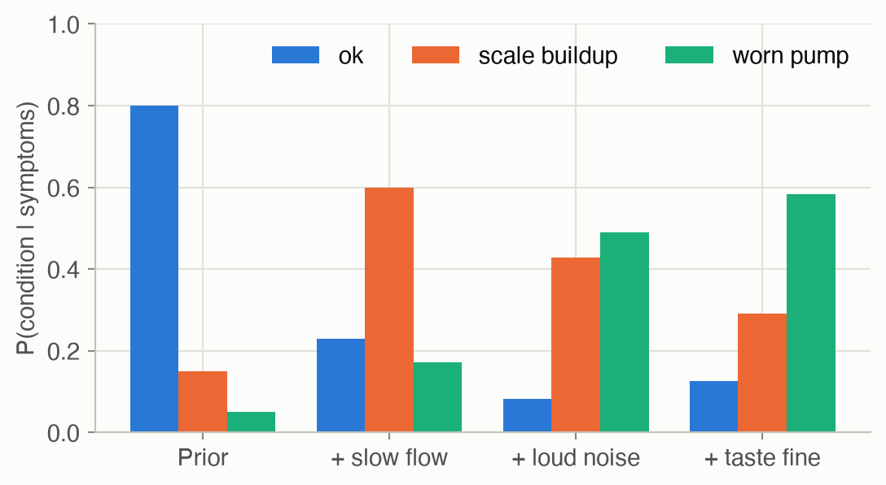
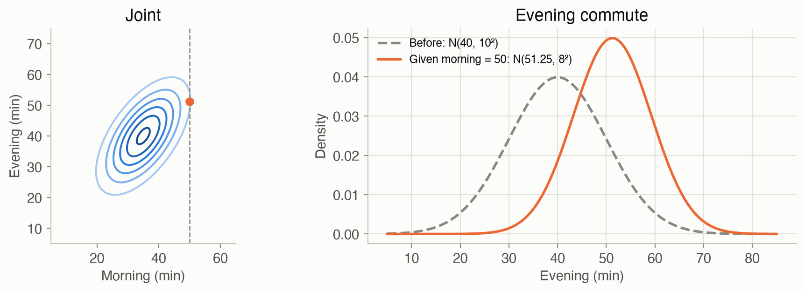
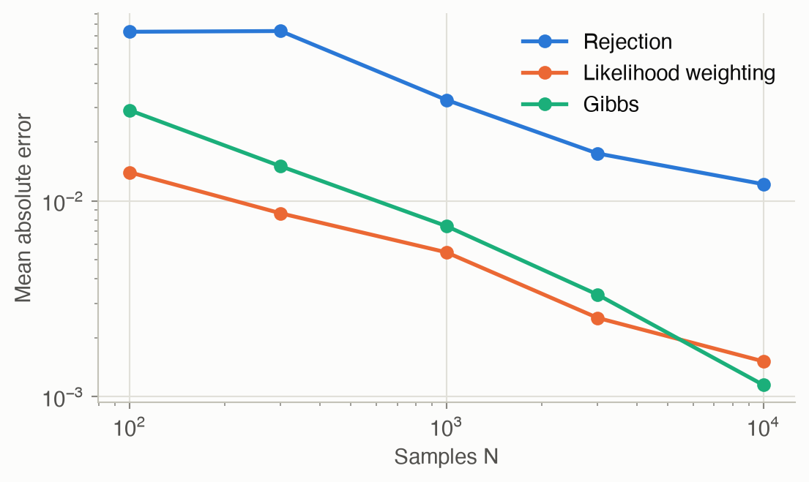
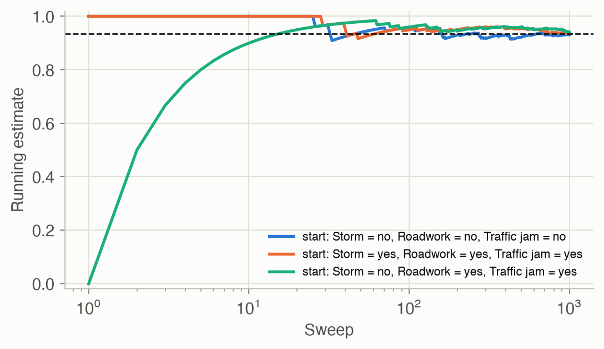

3 · Inference
Part I — Probabilistic Reasoning
Big picture
Where this chapter fits
Chapter 2 built a language for beliefs: a Bayesian network stores a big joint distribution as small local tables, one per variable. This chapter uses that language. A model is only useful if you can ask it questions, and asking it a question is called inference. Every later chapter relies on it: - Ch 4 needs it to learn from incomplete data; - Ch 6 needs it to weigh the outcomes of decisions; - Ch 19 runs it at every time step to track a hidden state.
The question: given what you’ve observed, how likely is something you haven’t? You’re late and the radio warned of a storm. How likely is it that there actually was a storm? Written as a formula, \(P(\text{query} \mid \text{evidence})\).
The short answer: every such question is answered by adding up the joint distribution over the variables you don’t care about. Doing that naively takes exponential time, so you either organize the additions cleverly (variable elimination) or estimate them by simulation (sampling).
The key ideas at a glance
Inference is summing and normalizing. Split the variables into three groups: the query (what you want to know), the evidence (what you’ve observed) and the hidden variables (everything else). The answer is the total probability of the situations where the query holds and the evidence matches, divided by the total over all situations where the evidence matches. That’s exact, but the number of situations doubles with every hidden yes/no variable.
Variable elimination organizes the sums. Most of the chain-rule product doesn’t involve any given hidden variable. So you can sum out one variable at a time, touching only the few tables that mention it, and keep the small result for later. The work depends on the order in which variables are eliminated. It’s efficient for many networks, although exact inference is intractable (NP-hard) in the worst case.
Naive Bayes is inference made trivial. If one hidden cause produces several observations that are otherwise unrelated, as a machine’s fault produces its symptoms, the posterior is just the prior times one likelihood per observation, normalized. That’s quick enough for diagnosis and classification.
Sampling estimates the sums. Simulate many situations from the model and count. Rejection sampling keeps only the simulations that match the evidence, which wastes most of them when the evidence is rare. Likelihood weighting forces the evidence into every simulation and weights each one by how plausible that forcing was. Gibbs sampling changes one variable at a time given everything else, and wanders through the plausible situations. More samples mean more accuracy, with error shrinking roughly like \(1/\sqrt{\text{samples}}\).
Gaussian models need no sums. When everything is jointly Gaussian, observing some variables shifts the others’ mean in proportion to how surprising the observation was, and shrinks their spread by a fixed amount. It’s a closed-form formula, and it’s the same update the Kalman filter uses.
Vocabulary
| Term | Plain meaning |
|---|---|
| Query / evidence / hidden | What you want to know / what you’ve observed / everything else |
| Marginalize (sum out) | Add up a joint over all values of some variables to remove them |
| Normalize | Rescale numbers so they add up to 1 |
| Factor \(\phi\) | A table over some variables: a CPT, or any partial product of CPTs |
| Elimination order | The order in which variable elimination sums variables out |
| Direct sampling | Drawing a full situation from the model, causes before effects |
| Likelihood weight | How plausible the observed evidence was in one weighted sample |
| Markov blanket | A variable’s parents, children and children’s other parents: all Gibbs needs |
| Burn-in | Early Gibbs samples thrown away while the chain forgets its starting point |
After this chapter you can
- Answer a query in a small Bayesian network by hand, summing in a smart order.
- Implement variable elimination with factor products and sums.
- Diagnose with naive Bayes.
- Estimate queries by sampling, and pick a sampler based on how rare the evidence is.
- Condition a Gaussian on an observation.
Intuition
TipAnalogy
A detective asks: “Given the clues, how likely is it that the butler did it?”
The exact way: list every possible story consistent with the clues, weigh each by how plausible it is, and add up the weight of the stories in which the butler did it. That’s correct, but the number of stories explodes. Variable elimination is the detective who notices that many stories share sub-plots, and works each sub-plot out once instead of in every story.
The sampling way: run thousands of simulated evenings from the model and look at the ones that match the clues.
- Rejection sampling throws away every simulation that doesn’t match. That’s wasteful when the clues are rare.
- Likelihood weighting forces every simulation to match the clues, then gives less weight to the ones where that forcing was implausible.
- Gibbs sampling starts from any story that matches the clues, then keeps revising one detail at a time. It wanders through the plausible stories in proportion to how plausible they are.
Summing and normalizing
You’re late and the radio issued an alert. There are only two possibilities for the storm: it happened or it didn’t. Add up the probability of every full morning with a storm, late and an alert: 0.0364. Do the same without a storm: 0.0025. Together they total 0.0389, the probability of the evidence. The storm’s share is \(0.0364 / 0.0389 = 0.935\). That’s all inference is. The difficulty is only that “every full morning” can be astronomically many. See Equation 1.
One product for naive Bayes
A coffee machine is fine 80% of the time and has a worn pump 5% of the time. A worn pump makes a loud noise 80% of the time, a healthy machine only 10%. Hearing the noise multiplies each condition’s weight by its noise probability: fine becomes \(0.80 \times 0.1 = 0.08\) and pump becomes \(0.05 \times 0.8 = 0.04\). Scale buildup, the third condition, becomes \(0.15 \times 0.2 = 0.03\). Normalizing, one symptom raises the pump from 5% to \(0.04 / 0.15 \approx 27\%\). Each further symptom multiplies in again. See Equation 2.
Simulating instead of summing
Run the commute model 1,000 times. The evidence, late and an alert, shows up on only about 39 of those mornings. Rejection sampling estimates the storm probability from those 39 alone, a noisy answer. Likelihood weighting instead sets “late” and “alert” in all 1,000 runs, and weights each run by how likely that evidence was given its simulated storm and jam. Runs with a storm get weights hundreds of times larger than runs without, and all 1,000 runs contribute. Gibbs sampling fixes the evidence and repeatedly re-draws one unknown at a time given the rest. See Equation 4, Equation 5 and Equation 6.
Gaussians in closed form
Morning and evening commutes are correlated: bad days tend to be bad all day. This morning took 50 minutes, 15 more than usual. The model says each morning minute above average predicts 0.75 of an evening minute above average. So expect about 11 extra minutes tonight (51 instead of 40), with a spread that shrinks from 10 to 8 minutes, whatever this morning’s time was. See Equation 7.
Formalism
Inference by enumeration
Split the variables into the query \(q\), the evidence \(e\) (observed values), and everything else, the hidden variables \(h\) (ADM §3.1).
\[ P(q \mid e) = \frac{P(q, e)}{P(e)} = \frac{\sum_{h} P(q, h, e)}{\sum_{q'} \sum_{h} P(q', h, e)} \tag{1}\]
In words. Add up the probability of every complete situation that matches the query value and the evidence. Then divide by the same total taken over every query value.
Term by term.
- \(P(q, h, e)\) is one entry of the joint, computed by the chain rule of Ch 2.
- \(\sum_h\) marginalizes out the hidden variables: it adds up over all their values.
- The denominator \(P(e)\) doesn’t depend on \(q\). In practice you compute the numerator for every value of \(q\) and normalize.
The cost is the problem: with \(n\) binary hidden variables, there are \(2^n\) terms.
Naive Bayes: one product
A naive Bayes model has one class variable \(C\) and observations \(o_1, \ldots, o_n\) that each depend only on \(C\) (ADM §3.2). The structure is shown in Figure 2. Enumeration then collapses to a single product.
\[ P(c \mid o_{1:n}) \;\propto\; P(c) \prod_{i=1}^{n} P(o_i \mid c) \tag{2}\]
In words. Start from how common each class is, then multiply in how well each observation fits that class. Normalize at the end.
Term by term. \(P(c)\) is the class prior, and \(P(o_i \mid c)\) is the likelihood of observation \(i\) under class \(c\). The product is exact because the observations are assumed independent given the class. That is the “naive” part: it’s often not quite true, but it usually still ranks the classes well.
Variable elimination: pushing sums inside
Most joint entries share factors. Summing over a variable only involves the factors that mention it, so you can move each sum inward, past the factors that don’t depend on it (ADM §3.3). The tables involved are called factors \(\phi\): a CPT, a product of CPTs, or any partial result.
\[ P(l^1, a^1) = \sum_{s} P(s)\, P(a^1 \mid s) \sum_{r} P(r) \sum_{j} P(j \mid s, r)\, P(l^1 \mid j) \tag{3}\]
In words. Instead of one giant sum over all combinations of \(s\), \(r\) and \(j\), do the innermost sum first (\(j\)), then use its result in the next sum out (\(r\)), and so on. Each step creates a small factor that replaces the variable it summed out.
Term by term.
- The innermost \(\sum_j P(j \mid s, r) P(l^1 \mid j)\) multiplies the two factors that mention \(j\) and sums \(j\) out. The result is a new factor \(\phi_1(s, r)\) with 4 entries.
- \(\sum_r P(r)\, \phi_1(s, r)\) does the same for \(r\), giving \(\phi_2(s)\).
- The outer sum over \(s\) combines the rest.
- The two operations throughout are factor product (multiply entries that agree on shared variables) and summing out. That’s where the name “sum-product” comes from.
The work depends on the elimination order: a bad order creates big intermediate factors. Finding the best order is itself hard. In fact, exact inference in general Bayesian networks is NP-hard (ADM §3.5). On tree-shaped networks, belief propagation passes messages along the edges and gets every marginal efficiently (ADM §3.4).
Sampling
When exact inference is too costly, estimate the answer from samples.
Direct sampling (ADM §3.6) draws a complete sample by visiting the variables in topological order, parents before children, and drawing each one from its CPT row given the parents already drawn. Rejection sampling keeps only the samples that match the evidence:
\[ \hat{P}(q \mid e) = \frac{\#\{\text{samples with } q \text{ and } e\}}{\#\{\text{samples with } e\}} \tag{4}\]
In words. Among the simulated situations that match the evidence, the fraction where the query holds.
Term by term. Both counts come from the same stream of direct samples. The estimate converges to the truth as samples accumulate, but only the matching samples count. With evidence of probability \(P(e)\), you keep only about \(N \cdot P(e)\) of \(N\) samples. For “late and radio alert”, \(P(e) = 0.039\), so 96% are wasted.
Likelihood weighting (ADM §3.7) never wastes a sample. It sets the evidence variables to their observed values instead of sampling them, and corrects for that with a weight:
\[ w = \prod_{e_i \in e} P\big(e_i \mid \mathrm{pa}(e_i)\big) \qquad \hat{P}(q \mid e) = \frac{\sum_{\text{samples with } q} w}{\sum_{\text{all samples}} w} \tag{5}\]
In words. A sample’s weight is how likely the observed evidence would have been, given the values sampled for its parents. Samples where the evidence was plausible count more.
Term by term. The product runs over the evidence variables only, and \(\mathrm{pa}(e_i)\) takes the values drawn in this sample. For example, if a sample drew “storm” and “jam”, its weight for evidence (late, alert) is \(P(l^1 \mid j^1)\, P(a^1 \mid s^1) = 0.5 \times 0.95 = 0.475\).
Gibbs sampling (ADM §3.8) builds a Markov chain. It starts from any assignment consistent with the evidence, then repeatedly resamples one hidden variable given all the others:
\[ P(x_i \mid x_{-i}) \;\propto\; P\big(x_i \mid \mathrm{pa}(x_i)\big) \prod_{c \,\in\, \mathrm{children}(x_i)} P\big(c \mid \mathrm{pa}(c)\big) \tag{6}\]
In words. To resample \(x_i\), weigh each of its values by how well it fits its parents, and how well its children fit it.
Term by term.
- \(x_{-i}\) is every variable except \(x_i\).
- Only \(x_i\)’s Markov blanket matters: its parents, its children, and its children’s other parents. Every other factor of the joint is the same for all values of \(x_i\), so it cancels when you normalize.
- Consecutive samples are correlated, and the chain needs time to forget its starting point. The early sweeps are discarded (burn-in), and sometimes only every \(k\)-th sweep is kept (thinning).
Gaussian models: conditioning in closed form
If the variables are jointly Gaussian, inference needs no sums at all (ADM §3.9). Split the variables into a query block \(\mathbf{a}\) and an observed block \(\mathbf{b}\):
\[ \boldsymbol{\mu}_{a \mid b} = \boldsymbol{\mu}_a + \boldsymbol{\Sigma}_{ab} \boldsymbol{\Sigma}_{bb}^{-1} (\mathbf{b} - \boldsymbol{\mu}_b) \qquad \boldsymbol{\Sigma}_{a \mid b} = \boldsymbol{\Sigma}_{aa} - \boldsymbol{\Sigma}_{ab} \boldsymbol{\Sigma}_{bb}^{-1} \boldsymbol{\Sigma}_{ba} \tag{7}\]
In words. Seeing \(\mathbf{b}\) shifts your estimate of \(\mathbf{a}\) in proportion to how surprising \(\mathbf{b}\) was and how strongly the two are correlated. It also shrinks your uncertainty, by the same amount whatever value you saw.
Term by term.
- \(\mathbf{b} - \boldsymbol{\mu}_b\) is the surprise: the observation minus its expected value.
- \(\boldsymbol{\Sigma}_{ab} \boldsymbol{\Sigma}_{bb}^{-1}\) is the regression coefficient: how far \(\mathbf{a}\) moves per unit of surprise. In 1D it is \(\rho\, \sigma_a / \sigma_b\).
- \(\boldsymbol{\Sigma}_{a \mid b}\) doesn’t depend on the observed value. In 1D it is \(\sigma_a^2 (1 - \rho^2)\).
- This is exactly the Kalman filter’s correct step from Ch 19, with the prediction playing the role of the prior.
Worked example
Exact inference by hand
Using the commute network from Ch 2 (its tables are also in the problem gallery): you’re late and the radio warned of a storm. How likely is a storm? Follow Equation 3, innermost sum first.
Step 1: sum out the jam \(j\), for each combination of storm and roadwork: \(\phi_1(s, r) = \sum_j P(j \mid s, r) P(l^1 \mid j)\).
| \(r^0\) | \(r^1\) | |
|---|---|---|
| \(s^0\) | \(0.1(0.5) + 0.9(0.05) = 0.095\) | \(0.6(0.5) + 0.4(0.05) = 0.320\) |
| \(s^1\) | \(0.7(0.5) + 0.3(0.05) = 0.365\) | \(0.9(0.5) + 0.1(0.05) = 0.455\) |
Step 2: sum out roadwork \(r\): \(\phi_2(s) = \sum_r P(r) \phi_1(s, r)\). \(\phi_2(s^0) = 0.8(0.095) + 0.2(0.320) = 0.140\) and \(\phi_2(s^1) = 0.8(0.365) + 0.2(0.455) = 0.383\).
Step 3: combine with the storm prior and the radio:
- \(P(s^1, l^1, a^1) = 0.1 \times 0.95 \times 0.383 = 0.03639\)
- \(P(s^0, l^1, a^1) = 0.9 \times 0.02 \times 0.140 = 0.00252\)
Normalize: \(P(s^1 \mid l^1, a^1) = 0.03639 / (0.03639 + 0.00252) \approx\) 0.935. The radio alert is strong evidence: an alert without a storm happens only 2% of the time. Enumeration would have summed 8 full joint entries for each storm value. Variable elimination never built anything bigger than a 4-entry table.
Naive Bayes: diagnosing a coffee machine
A machine is fine 80% of the time, has scale buildup 15% of the time, and a worn pump 5% of the time. Each condition shows three symptoms with different probabilities:
| Condition | Prior | Slow flow | Loud noise | Weak taste |
|---|---|---|---|---|
| ok | 0.80 | 0.05 | 0.10 | 0.10 |
| scale buildup | 0.15 | 0.70 | 0.20 | 0.60 |
| worn pump | 0.05 | 0.60 | 0.80 | 0.30 |
The coffee flows slowly and the machine is loud, but the taste is fine. By Equation 2:
- ok: \(0.80 \times 0.05 \times 0.10 \times 0.90 = 0.0036\)
- scale buildup: \(0.15 \times 0.70 \times 0.20 \times 0.40 = 0.0084\)
- worn pump: \(0.05 \times 0.60 \times 0.80 \times 0.70 = 0.0168\)
These sum to \(0.0288\), so the posterior is \((0.125, 0.292, 0.583)\). The worn pump, the rarest condition a priori, is now the most likely, because the noise fits it so much better. Figure 3 shows the belief shifting as each symptom arrives.

Gaussian conditioning
Morning and evening commute times (in minutes) are jointly Gaussian: morning \(\mathcal{N}(35, 8^2)\), evening \(\mathcal{N}(40, 10^2)\), with correlation \(\rho = 0.6\) (bad traffic days tend to be bad all day). This morning took 50 minutes. By Equation 7, in 1D:
- Shift: \(\rho\, \sigma_e / \sigma_m \times (50 - 35) = 0.6 \times \tfrac{10}{8} \times 15 = 11.25\), so the expected evening time is \(40 + 11.25 = 51.25\) minutes.
- Spread: \(10^2 (1 - 0.6^2) = 64\), so the standard deviation is 8 minutes, down from 10.
Figure 4 shows the joint and the conditional.

Interactive
Race the samplers
This runs rejection sampling and likelihood weighting live in your browser, on the commute network, to estimate \(P(\text{storm} \mid \text{evidence})\). Choose the evidence and the number of samples. Rare evidence (late and a radio alert) leaves rejection sampling with very few samples to count. Likelihood weighting uses every sample.
Condition on the morning commute
Choose how long this morning’s commute took. The evening-time belief shifts with the surprise, but its width stays the same: \(\sigma = 8\) minutes, whatever you observe.
Algorithms & code
Factors
A factor is a table with one named axis per variable. Everything else is built from three operations on factors: product, summing out, and conditioning.
@dataclass(frozen=True)
class Factor:
variables: tuple
table: np.ndarray
def cpt_factor(bn: BayesNet, x: str) -> Factor:
"""X's CPT as a factor over (parents..., X)."""
return Factor(tuple(bn.parents[x]) + (x,), bn.cpt[x])
def factor_product(f: Factor, g: Factor) -> Factor:
"""phi(x, y, z) = f(x, y) * g(y, z), matching entries on shared variables."""
variables = f.variables + tuple(v for v in g.variables if v not in f.variables)
def expand(h: Factor) -> np.ndarray:
# Reorder h's axes to follow `variables`, then insert a size-1 axis
# for every variable h doesn't mention. NumPy broadcasting then lines
# up shared variables and repeats h along the ones it lacks.
order = [h.variables.index(v) for v in variables if v in h.variables]
shape = [h.table.shape[h.variables.index(v)] if v in h.variables else 1
for v in variables]
return np.transpose(h.table, order).reshape(shape)
return Factor(variables, expand(f) * expand(g))
def sum_out(f: Factor, x: str) -> Factor:
"""Marginalize x away: add the table up along x's axis."""
i = f.variables.index(x)
return Factor(f.variables[:i] + f.variables[i + 1:], f.table.sum(axis=i))
def condition(f: Factor, evidence: dict) -> Factor:
"""Keep only entries that agree with the evidence, and drop those axes."""
# An integer index picks one value (and removes the axis); slice(None)
# keeps the whole axis, like `:` does.
index = tuple(evidence.get(v, slice(None)) for v in f.variables)
kept = tuple(v for v in f.variables if v not in evidence)
return Factor(kept, np.asarray(f.table[index]))
def normalize(f: Factor, order=None) -> Factor:
"""Scale the table to sum to 1, optionally reordering its axes."""
order = tuple(order or f.variables)
table = np.transpose(f.table, [f.variables.index(v) for v in order])
return Factor(order, table / table.sum())using ADM, Distributions, Random
# A factor: a table with one named axis per variable.
struct Factor
vars::Vector{Symbol}
table::Array{Float64}
end
cpt_factor(bn, x) = Factor([bn.parents[x]..., x], bn.cpt[x])
function factor_product(f, g)
vars = [f.vars; [v for v in g.vars if !(v in f.vars)]]
# Put each table's axes in `vars` order, with a size-1 axis for every variable it
# doesn't mention; broadcasting (.*) then matches shared variables and repeats the rest.
function expand(h)
axis(v) = findfirst(==(v), h.vars)
t = isempty(h.vars) ? h.table : permutedims(h.table, [axis(v) for v in vars if v in h.vars])
return reshape(t, Tuple(v in h.vars ? size(h.table, axis(v)) : 1 for v in vars))
end
return Factor(vars, expand(f) .* expand(g))
end
function sum_out(f, x)
i = findfirst(==(x), f.vars)
return Factor(deleteat!(copy(f.vars), i), dropdims(sum(f.table; dims = i); dims = i))
end
function condition(f, evidence)
# An integer picks one value (dropping that axis); Colon() keeps the whole axis.
idx = [haskey(evidence, v) ? evidence[v] : Colon() for v in f.vars]
t = f.table[idx...]
return Factor([v for v in f.vars if !haskey(evidence, v)], t isa Array ? t : fill(t))
end
# Scale to sum to 1, with axes in the given order. (Named `normalized` to avoid
# clashing with LinearAlgebra's `normalize`.)
function normalized(f, order = f.vars)
t = permutedims(f.table, [findfirst(==(v), f.vars) for v in order])
return Factor(collect(order), t ./ sum(t))
endExact inference and variable elimination
exact_inference multiplies every CPT into the full joint first. variable_elimination never does: before summing out each hidden variable, it multiplies only the factors that mention it.
def exact_inference(bn: BayesNet, query, evidence: dict) -> Factor:
"""P(query | evidence) from the full joint: exact but exponential."""
phi = reduce(factor_product, (cpt_factor(bn, x) for x in bn.parents))
phi = condition(phi, evidence)
for v in phi.variables:
if v not in query: # every hidden variable gets summed out
phi = sum_out(phi, v)
return normalize(phi, query)
def variable_elimination(bn: BayesNet, query, evidence: dict, order) -> Factor:
"""P(query | evidence), summing out hidden variables one at a time.
`order` lists the hidden variables in the order to eliminate them.
"""
factors = [condition(cpt_factor(bn, x), evidence) for x in bn.parents]
for h in order:
# Only the factors that mention h are multiplied before h is summed
# out; every other factor is left alone. That is the whole saving
# over building the full joint.
involved = [f for f in factors if h in f.variables]
factors = [f for f in factors if h not in f.variables]
if involved:
factors.append(sum_out(reduce(factor_product, involved), h))
return normalize(reduce(factor_product, factors), query)function exact_inference(bn, query, evidence)
ϕ = reduce(factor_product, [cpt_factor(bn, x) for x in keys(bn.parents)])
ϕ = condition(ϕ, evidence)
for v in setdiff(ϕ.vars, query) # sum out every hidden variable
ϕ = sum_out(ϕ, v)
end
return normalized(ϕ, query)
end
function variable_elimination(bn, query, evidence, order)
factors = [condition(cpt_factor(bn, x), evidence) for x in keys(bn.parents)]
for h in order
# Multiply only the factors that mention h, then sum h out;
# every other factor is left alone.
involved = filter(f -> h in f.vars, factors)
filter!(f -> !(h in f.vars), factors)
isempty(involved) || push!(factors, sum_out(reduce(factor_product, involved), h))
end
return normalized(reduce(factor_product, factors), query)
endRejection sampling and likelihood weighting
def topological_order(parents: dict) -> list:
"""Variables ordered so that every parent comes before its children."""
order = []
while len(order) < len(parents):
for x, pa in parents.items():
if x not in order and all(p in order for p in pa):
order.append(x)
return order
def _cpt_row(bn: BayesNet, sample: dict, x: str) -> np.ndarray:
"""Distribution of x given the parents' values in `sample`."""
return bn.cpt[x][tuple(sample[q] for q in bn.parents[x])]
def direct_sample(bn: BayesNet, rng, order=None) -> dict:
"""One joint sample: draw each variable given its already-drawn parents."""
sample = {}
for x in order or topological_order(bn.parents):
row = _cpt_row(bn, sample, x)
sample[x] = rng.choice(len(row), p=row)
return sample
def rejection_sampling(bn, query, evidence, n, rng) -> Factor:
"""Draw n direct samples; keep those that match the evidence."""
order = topological_order(bn.parents)
counts = np.zeros([bn.card[q] for q in query])
for _ in range(n):
s = direct_sample(bn, rng, order)
if all(s[v] == value for v, value in evidence.items()):
counts[tuple(s[q] for q in query)] += 1
if counts.sum() == 0:
raise ValueError("no sample matched the evidence; draw more samples")
return Factor(tuple(query), counts / counts.sum())
def likelihood_weighted_sampling(bn, query, evidence, n, rng) -> Factor:
"""Fix evidence variables instead of sampling them, and weight each
sample by how likely that evidence was given its sampled parents."""
order = topological_order(bn.parents)
weights = np.zeros([bn.card[q] for q in query])
for _ in range(n):
s, w = {}, 1.0
for x in order:
row = _cpt_row(bn, s, x)
if x in evidence:
s[x] = evidence[x]
w *= row[s[x]] # P(observed value | sampled parents)
else:
s[x] = rng.choice(len(row), p=row)
weights[tuple(s[q] for q in query)] += w
return Factor(tuple(query), weights / weights.sum())function topological_order(parents)
order = Symbol[]
while length(order) < length(parents)
for (x, pa) in parents
!(x in order) && all(p in order for p in pa) && push!(order, x)
end
end
return order
end
# Distribution of x given the parents' values in sample s: index the CPT by the
# parents' values (splatted), then take the whole last axis.
cpt_row(bn, s, x) = bn.cpt[x][(s[q] for q in bn.parents[x])..., :]
function direct_sample(bn, rng, order = topological_order(bn.parents))
s = Dict{Symbol, Int}()
for x in order # parents are always drawn before children
s[x] = rand(rng, Categorical(cpt_row(bn, s, x)))
end
return s
end
function rejection_sampling(bn, query, evidence, n, rng)
order, counts = topological_order(bn.parents), zeros(bn.card[query])
for _ in 1:n
s = direct_sample(bn, rng, order)
all(s[v] == val for (v, val) in evidence) && (counts[s[query]] += 1) # keep matches only
end
return counts ./ sum(counts)
end
function likelihood_weighted_sampling(bn, query, evidence, n, rng)
order, weights = topological_order(bn.parents), zeros(bn.card[query])
for _ in 1:n
s, w = Dict{Symbol, Int}(), 1.0
for x in order
p = cpt_row(bn, s, x)
if haskey(evidence, x)
s[x] = evidence[x]
w *= p[s[x]] # P(observed value | sampled parents)
else
s[x] = rand(rng, Categorical(p))
end
end
weights[s[query]] += w
end
return weights ./ sum(weights)
endGibbs sampling
def blanket_distribution(bn: BayesNet, sample: dict, x: str) -> np.ndarray:
"""P(x | all other variables), which depends only on x's Markov blanket:
P(x | pa(x)) times P(c | pa(c)) for each child c of x."""
children = [c for c, pa in bn.parents.items() if x in pa]
p = np.empty(bn.card[x])
for value in range(bn.card[x]):
s = {**sample, x: value} # try x = value, keep everything else
p[value] = prod(_cpt_row(bn, s, y)[s[y]] for y in [x, *children])
return p / p.sum()
def gibbs_sampling(bn, query, evidence, n, rng, burn_in=200, thin=1):
"""Markov chain: resample one hidden variable at a time from its
distribution given everything else. Returns P(query | evidence)."""
# Start anywhere consistent with the evidence.
sample = {**direct_sample(bn, rng), **evidence}
hidden = [x for x in bn.parents if x not in evidence]
counts = np.zeros([bn.card[q] for q in query])
for k in range(burn_in + n * thin):
for x in hidden:
p = blanket_distribution(bn, sample, x)
sample[x] = rng.choice(len(p), p=p)
# Skip the first `burn_in` sweeps (the chain hasn't forgotten its
# start yet), then keep one sweep in every `thin`.
if k >= burn_in and (k - burn_in) % thin == 0:
counts[tuple(sample[q] for q in query)] += 1
return Factor(tuple(query), counts / counts.sum())# P(x | everything else): only x's own CPT row and its children's rows depend on x.
function blanket_distribution(bn, s, x)
children = [c for (c, pa) in bn.parents if x in pa]
p = map(1:bn.card[x]) do value
t = merge(s, Dict(x => value)) # try x = value, keep the rest
prod(cpt_row(bn, t, y)[t[y]] for y in [x; children])
end
return p ./ sum(p)
end
function gibbs_sampling(bn, query, evidence, n, rng; burn_in = 200)
s = merge(direct_sample(bn, rng), evidence) # any start consistent with the evidence
hidden = [x for x in keys(bn.parents) if !haskey(evidence, x)]
counts = zeros(bn.card[query])
for k in 1:(burn_in + n)
for x in hidden
s[x] = rand(rng, Categorical(blanket_distribution(bn, s, x)))
end
k > burn_in && (counts[s[query]] += 1) # skip the burn-in sweeps
end
return counts ./ sum(counts)
endNaive Bayes and Gaussian conditioning
def naive_bayes_posterior(prior, likelihoods, observations) -> np.ndarray:
"""P(c | o_1..o_n), proportional to P(c) * prod_i P(o_i | c).
likelihoods[i][c, o] = P(feature i = o | class c).
"""
p = np.array(prior, dtype=float)
for L, o in zip(likelihoods, observations):
p = p * L[:, o]
return p / p.sum()
def gaussian_condition(mu, Sigma, a, b, values):
"""Mean and covariance of x_a given x_b = values, for a joint Gaussian.
a and b are lists of indices into mu and Sigma.
"""
S_ab, S_bb = Sigma[np.ix_(a, b)], Sigma[np.ix_(b, b)]
# K = S_ab S_bb^-1: how far the query moves per unit of surprise in
# the observed variables. solve() avoids forming the inverse.
K = np.linalg.solve(S_bb, S_ab.T).T
mu_a = mu[a] + K @ (np.asarray(values) - mu[b])
Sigma_a = Sigma[np.ix_(a, a)] - K @ S_ab.T
return mu_a, Sigma_afunction naive_bayes_posterior(prior, likelihoods, observations)
p = copy(prior)
for (L, o) in zip(likelihoods, observations)
p .*= L[:, o] # L[c, o] = P(feature = o | class c)
end
return p ./ sum(p)
end
function gaussian_condition(μ, Σ, a, b, values)
K = Σ[a, b] / Σ[b, b] # Σ_ab Σ_bb⁻¹, computed without forming the inverse
return μ[a] + K * (values - μ[b]), Σ[a, a] - K * Σ[b, a]
endRun them all
from adm.problems.commute import COMMUTE
evidence = {"L": 1, "A": 1} # late, and the radio warned of a storm
exact = exact_inference(COMMUTE, ("S",), evidence)
ve = variable_elimination(COMMUTE, ("S",), evidence, order=["J", "R"])
rng = np.random.default_rng(3)
rejection = rejection_sampling(COMMUTE, ("S",), evidence, 20_000, rng)
weighted = likelihood_weighted_sampling(COMMUTE, ("S",), evidence, 20_000, rng)
gibbs = gibbs_sampling(COMMUTE, ("S",), evidence, 20_000, rng)
coffee = naive_bayes_posterior(PRIOR, LIKELIHOODS, [1, 1, 0])
evening_mean, evening_var = gaussian_condition(COMMUTE_TIMES_MEAN, COMMUTE_TIMES_COV, [1], [0], [50.0])commute = commute_network()
evidence = Dict(:L => 2, :A => 2) # late, and the radio warned of a storm (2 = yes)
exact = exact_inference(commute, [:S], evidence).table
@assert exact[2] ≈ 0.036385 / 0.038905
@assert variable_elimination(commute, [:S], evidence, [:J, :R]).table ≈ exact
rng = MersenneTwister(3)
@assert abs(rejection_sampling(commute, :S, evidence, 20_000, rng)[2] - exact[2]) < 0.03
@assert abs(likelihood_weighted_sampling(commute, :S, evidence, 20_000, rng)[2] - exact[2]) < 0.02
@assert abs(gibbs_sampling(commute, :S, evidence, 20_000, rng)[2] - exact[2]) < 0.03
coffee = coffee_network()
likelihoods = [coffee.cpt[s] for s in (:F, :N, :W)]
@assert naive_bayes_posterior(COFFEE_PRIOR, likelihoods, [2, 2, 1]) ≈ [0.0036, 0.0084, 0.0168] ./ 0.0288
μ, Σ = gaussian_condition(COMMUTE_TIMES_MEAN, COMMUTE_TIMES_COV, [2], [1], [50.0])
@assert μ ≈ [51.25] && Σ ≈ fill(64.0, 1, 1)P(storm | late, alert): exact 0.9352 variable elimination 0.9352
rejection 0.9309 likelihood weighting 0.9376 Gibbs 0.9378
Coffee machine (ok, scale, pump): [0.125 0.292 0.583]
Evening given morning = 50: mean 51.25, sd 8.0
NoteReading the Julia code (for Python programmers)
reduce(factor_product, factors)folds a list with a two-argument function, like Python’sfunctools.reduce.filter(f -> cond, xs)keeps the matching items;filter!does it in place.f -> …is Julia’slambda.cond && actionrunsactiononly ifcondis true.x || actionruns it only ifxis false.map(1:n) do value … endis the same asmap(value -> …, 1:n), written as a block.merge(d1, d2)combines dictionaries, withd2winning on shared keys, like{**d1, **d2}.dropdims(sum(A; dims = i); dims = i): Julia’ssumkeeps the summed axis with size 1, sodropdimsremoves it. NumPy’ssumdrops it for you.
Results: how fast do the samplers converge?
Figure 7 measures each sampler’s average error on \(P(\text{storm} \mid \text{late}, \text{alert})\) as the number of samples grows, averaged over 10 independent runs. All three improve roughly like \(1 / \sqrt{N}\), the usual Monte Carlo rate: about 3 times less error for 10 times more samples. Rejection sampling pays for the evidence’s rarity and is the least accurate at every \(N\). Likelihood weighting is best for most sample sizes. Gibbs sampling starts behind, because of its correlated early samples, but catches up by \(N = 10{,}000\).

Figure 8 shows why Gibbs sampling needs a burn-in. Three chains start from different assignments. Their running estimates disagree at first, then settle on the same answer.

Solved problems
Problem 1: a query through a fork. In the commute network, the radio issues an alert. What’s the probability of a traffic jam, \(P(j^1 \mid a^1)\)?
TipSolution
First update the storm belief: \(P(s^1 \mid a^1) \propto 0.1 \times 0.95 = 0.095\) and \(P(s^0 \mid a^1) \propto 0.9 \times 0.02 = 0.018\), so \(P(s^1 \mid a^1) = 0.095 / 0.113 = 0.841\).
Then sum out storm and roadwork. \(P(j^1 \mid s^1) = 0.8(0.7) + 0.2(0.9) = 0.74\) and \(P(j^1 \mid s^0) = 0.8(0.1) + 0.2(0.6) = 0.20\). So
\[ P(j^1 \mid a^1) = 0.841 \times 0.74 + 0.159 \times 0.20 = \mathbf{0.654}, \]
up from the prior \(P(j^1) = 0.254\). Information flows from the alert, through the storm, to the jam: the fork pattern of Ch 2.
Problem 2: why elimination order matters. A chain of 30 binary variables, \(X_1 \to X_2 \to \cdots \to X_{30}\). How many joint entries does enumeration sum to get \(P(x_{30})\)? How big is the largest factor if you eliminate \(X_1, X_2, \ldots\) in order?
TipSolution
Enumeration sums over the \(2^{29} \approx 5.4 \times 10^8\) combinations of the hidden variables, for each value of \(X_{30}\).
Eliminating in order: summing out \(X_1\) multiplies \(P(x_1)\) and \(P(x_2 \mid x_1)\), a factor over \((X_1, X_2)\) with 4 entries, and leaves \(\phi(x_2)\). Every later step is the same size. So the largest factor has 4 entries, and the total work is about \(29 \times 4\) multiplications: linear instead of exponential.
A bad order is costly. Eliminating \(X_{15}\) first leaves a factor linking \(X_{14}\) and \(X_{16}\), and each such choice can grow the factors further.
Problem 3: likelihood weights. With evidence “late and alert”, compute the weights of two samples: (a) storm = yes, jam = yes; (b) storm = no, jam = no. How many (b)-type samples equal one (a)-type sample?
TipSolution
By Equation 5, the weight is \(P(l^1 \mid j)\, P(a^1 \mid s)\):
- \(0.5 \times 0.95 = 0.475\)
- \(0.05 \times 0.02 = 0.001\)
One (a) sample counts as much as 475 (b) samples. Likelihood weighting still draws (b)-type samples often, since \(P(s^0, j^0) = 0.67\) a priori, but it nearly ignores them. When the evidence is very unlikely under the prior, most samples get tiny weights, and likelihood weighting degrades too. That’s one motivation for Gibbs sampling.
Problem 4: conditioning the other way. This evening’s commute took 60 minutes. What’s your belief about this morning’s?
TipSolution
Swap the roles in Equation 7. The shift is \(\rho\, \sigma_m / \sigma_e \times (60 - 40) = 0.6 \times \tfrac{8}{10} \times 20 = 9.6\), so the mean is \(35 + 9.6 =\) 44.6 minutes. The variance is \(8^2 (1 - 0.6^2) = 40.96\), a standard deviation of 6.4 minutes. The shrinkage factor \(1 - \rho^2 = 0.64\) is the same in both directions.
Recap
- Every inference query is a sum over the joint (Equation 1): fix the evidence, sum out the hidden variables, normalize. Why it matters: belief updates in Ch 19, the value of information in Ch 6, and learning with missing data in Ch 4 are all this computation.
- Variable elimination (Equation 3) pushes sums inside products, so it only builds factors as big as each step needs. The elimination order sets the cost, and exact inference is NP-hard in general. Why it matters: it is the practical exact method, and the same “sum out one variable at a time” idea is the predict step of every filter.
- Naive Bayes (Equation 2) is one product, exact when the observations are independent given the class. Why it matters: it’s a fast, surprisingly strong baseline for diagnosis and classification.
- Sampling trades exactness for scalability. Rejection sampling wastes samples when the evidence is rare (Equation 4); likelihood weighting fixes the evidence and weights instead (Equation 5); Gibbs sampling walks a Markov chain using only each variable’s Markov blanket (Equation 6). Why it matters: sampling is how inference scales to large models, and the same ideas reappear in particle filters (Ch 19) and Monte Carlo planning (Ch 9).
- Gaussian models condition in closed form (Equation 7): shift by the regression on the surprise, and shrink the variance by \(1 - \rho^2\). Why it matters: this is the Kalman filter’s update, and the backbone of estimation for continuous systems.
Cheat sheet & connections
| Name | Formula | Ref | Cost |
|---|---|---|---|
| Enumeration | \(P(q \mid e) \propto \sum_h P(q, h, e)\) | Equation 1 | exponential in hidden variables |
| ★ Naive Bayes | \(P(c \mid o_{1:n}) \propto P(c) \prod_i P(o_i \mid c)\) | Equation 2 | \(O(n \lvert C \rvert)\) |
| ★ Sum-product | Push each \(\sum\) inside the factors that don’t mention it | Equation 3 | set by the largest factor |
| Rejection estimate | \(\#(q, e) / \#(e)\) | Equation 4 | wastes a fraction \(1 - P(e)\) |
| Likelihood weight | \(w = \prod_{e_i} P(e_i \mid \mathrm{pa}(e_i))\) | Equation 5 | every sample used |
| Gibbs update | \(P(x_i \mid x_{-i}) \propto P(x_i \mid \mathrm{pa}) \prod_{\text{children}} P(c \mid \mathrm{pa}(c))\) | Equation 6 | per sweep: \(O(n)\) blanket updates |
| ★ Gaussian conditioning | \(\boldsymbol\mu_{a \mid b} = \boldsymbol\mu_a + \boldsymbol\Sigma_{ab} \boldsymbol\Sigma_{bb}^{-1}(\mathbf{b} - \boldsymbol\mu_b)\) | Equation 7 | \(O(d^3)\) |
Which method? Use variable elimination for small or tree-like networks. Use likelihood weighting when the evidence sits near the network’s roots and isn’t too surprising. Use Gibbs sampling for large networks with deep or surprising evidence. For Gaussian models, condition in closed form.
Common pitfalls
- Forgetting to normalize. A sum over the joint gives \(P(q, e)\), not \(P(q \mid e)\).
- Rejection sampling with rare evidence. The effective sample size is about \(N \cdot P(e)\). Check how many samples you actually kept.
- Trusting early Gibbs samples. Discard a burn-in, and remember that consecutive samples are correlated, so \(N\) Gibbs samples are worth fewer than \(N\) independent ones.
- A bad elimination order. Eliminate variables with few neighbors first, which keeps the factors small.
Connections
- Ch 2 · Representation defines the networks queried here.
- Ch 4 · Parameter Learning needs inference to learn from data with missing values.
- Ch 6 · Simple Decisions uses inference to compute expected utilities and the value of information.
- Appendix C · Computational Complexity: why exact inference is NP-hard, via a reduction from 3SAT.
- Ch 19 · Beliefs: the discrete filter is variable elimination over time, the Kalman filter is Gaussian conditioning, and the particle filter is likelihood weighting with resampling.